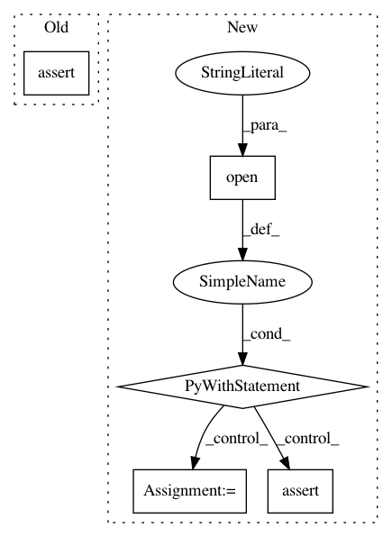

4b76c50442ad561eaa579745524808a912f129f7,tests/widgets/test_ImageFileDialog.py,,test_picking_file_updates_default_image_directory_to_previously_used,#Any#Any#,37
Before Change
def test_picking_file_updates_default_image_directory_to_previously_used(blank_preferences, image: Path):
preferences = blank_preferences
dialog = ImageFileDialog(None, preferences_manager=preferences)
assert dialog.directory().absolutePath() == Path("~").expanduser().absolute().as_posix()
dialog.selectFile(image.as_posix())
QTimer.singleShot(SINGLE_SHOT_DELAY, dialog.accept)
assert dialog.getSelectedPaths() == [image]
After Change
QTimer.singleShot(SINGLE_SHOT_DELAY, dialog.accept)
assert dialog.getSelectedPaths() == [image]
with open(tmp_preferences, "rb") as f:
assert pickle.load(f) == {dialog.preferences_group: {dialog.preferences_setting: image.as_posix()}}
def test_picking_n5_json_file_returns_directory_path(tmp_n5_file: Path):
dialog = ImageFileDialog(None)
dialog.setDirectory(str(tmp_n5_file))
dialog.selectFile("attributes.json")
In pattern: SUPERPATTERN
Frequency: 5
Non-data size: 5
Instances
Project Name: ilastik/ilastik
Commit Name: 4b76c50442ad561eaa579745524808a912f129f7
Time: 2019-10-15
Author: emilmelnikov@users.noreply.github.com
File Name: tests/widgets/test_ImageFileDialog.py
Class Name:
Method Name: test_picking_file_updates_default_image_directory_to_previously_used
Project Name: sassoftware/python-dlpy
Commit Name: 8afa7fb5dc0ef8bb6f2eb98e97d64821624b4e3c
Time: 2019-08-02
Author: Xiaozhuo.Cheng@sas.com
File Name: dlpy/tests/test_speech.py
Class Name: TestSpeechUtils
Method Name: test_segment_audio_2
Project Name: silvandeleemput/memcnn
Commit Name: 3333d20dd322cba2b028f228a01e9f9571f7a2b0
Time: 2019-05-27
Author: silvandeleemput@gmail.com
File Name: memcnn/experiment/tests/test_factory.py
Class Name:
Method Name: test_circular_dependency
Project Name: pantsbuild/pants
Commit Name: 8671207c2df7e4812c1681c5df68c27f6d935082
Time: 2015-10-06
Author: justin.trobec@gmail.com
File Name: tests/python/pants_test/backend/jvm/tasks/test_junit_run_integration.py
Class Name: JunitRunIntegrationTest
Method Name: test_junit_run_with_cobertura_coverage_succeeds
Project Name: vatlab/SoS
Commit Name: 41e5ced06a5148757e4a7233cffbe75b233ab539
Time: 2016-11-17
Author: ben.bog@gmail.com
File Name: test/test_utils.py
Class Name: TestUtils
Method Name: testTextRepr